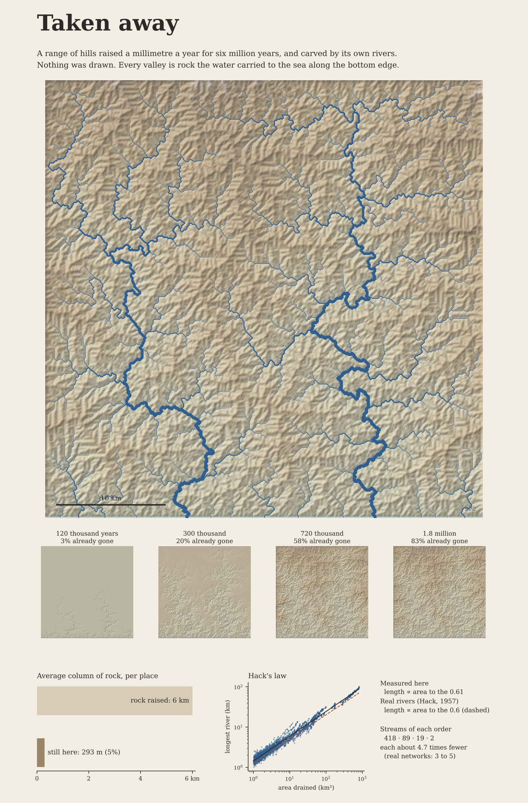

Taken away
A block of land 40 km across, pushed up a millimetre a year for six million years while rain cuts into it. Nothing was drawn. Every valley is rock the rivers carried to the sea along the bottom edge, and about 95% of what came up has gone that way. What's left is a picture of the leaving.

The rivers came out obeying two rules real rivers obey, which I didn't put in: a river's length grows as its drained area to the power 0.61 (real rivers: about 0.6, Hack's law), and each order of stream is about 4.7 times rarer than the one below (real networks: 3 to 5). The striped hillsides are the grid showing through: water here can only flow in eight directions.
Uplift plus stream-power erosion on a 400 × 400 grid of 100 m cells. Code and notes in the folder. Click the picture for full size.